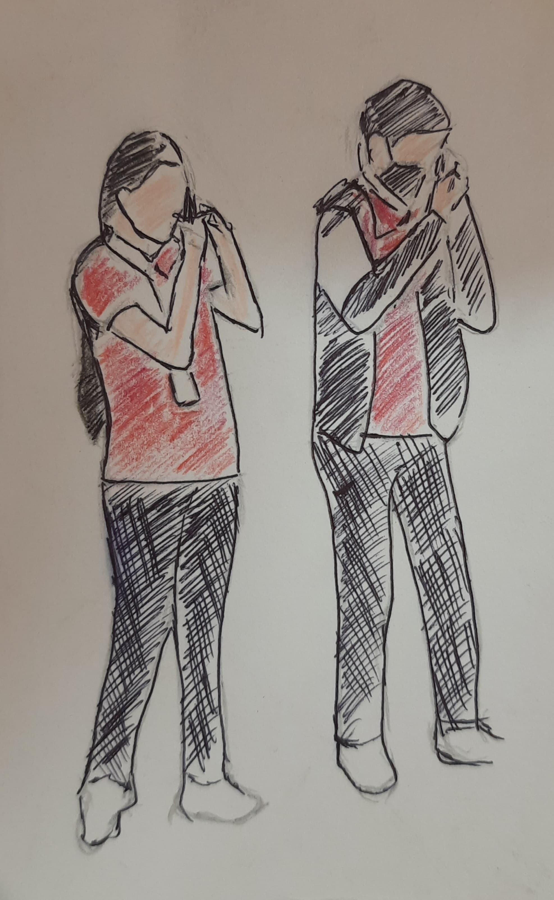

Chapter 2: My Fault
I know I’ve messed up, and there’s no undoing the damage I’ve caused. My ego, my behavior, and the way I treated you unfairly have completely ruined the bond we once had. I understand that now, but it’s too late, I know i’ve lost the trust you had in me, and I won’t be able to regain it. And the worst part is, it’s all because of me. (hiddden letter is R and U)In the beginning, I understood you, I valued our friendship, but somewhere along the way, I let my pride and my actions destroy everything we built. We used to vibe so well, laughing for hours, bhaang hunting, food dates, exchanging laptops, enjoying each other’s company like nothing else mattered. I miss those moments more than I can put into words. But I know things aren’t the same anymore, and it’s because I failed you. I just hope you know that, despite everything, I truly cherish the friendship we had, and I’ll always regret letting my own flaws come between us.
 Back to Home